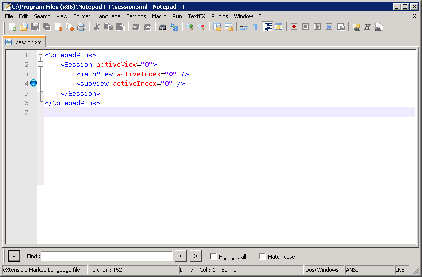

Incremental Search

To
open the Incremental Search dialog, select . This is a fast
means to find the first occurrence of some text and then find all
consecutive results.
- You can color all occurrences by enabling the
Highlight All option. The color can be adjusted using the Styler Configurator.
- If no text is found, the text area shows it by changing its background to pink - like the Firefox Search current web page control does.
- The Match Case option only results in hits that
have the same case as the query.
-
The
> button searches for the next occurrence, the < button for the
previous one. This is the same as hitting Enter or Shift-Enter respectively.
Finally, the X button will close the Incremental Search dialog.